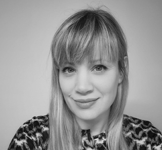

Aboutme

My name is Solange. I am a professional Argentinian photographer with more than 10 years of experience in photo sessions in outdoors, in studios, portraits, art and street photography.
I am passionate about street photography because I have to anticipate the emotion and sculpt a final picture in millisecond as a spectator. Everything happens without prior notice. Capturing authentic and spontaneous moments in everyday public environments is fascinating.
Studio photography is not spontaneous. But I take control over its design, technique, and timing to capture poses, shadows and details that together create an incredible visual story. Controlling the light, stage and background is vital.
For my work, I select the best professional studios and equipment showing my experience in this field.
This passion that I have carried with me since I was very young, along with my extensive professional career, are key components in my continued growth and experimentation in photography.